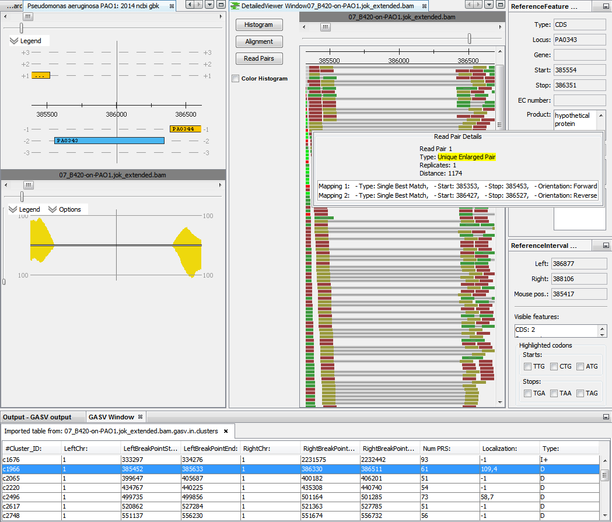

An integrated version of the command line tool enables the detection of genome rearrangements / structural variants for read pair data. All options of GASV are accessible via the analysis wizard (see for available options). The analysis is configured to only use Single Perfect and Single Best Match mappings to minimize false predictions.

Since the tool assumes that chromosome designations are numbers and this is not the case for prokaryotes, ReadXplorer utilizes the GASV option to set a chromosome naming file to use arbitrary chromosome designations. GASV writes its results into a tab separated file in CSV format on the hard disk. The content of this file is immediately visualized in ReadXplorer after finishing an analysis. The only difference is that the left and right breakpoint borders have been split into two columns to increase readability and simplify filtering and sorting of the result table.
The figure shows an exemplary result of a GASV analysis of P. aeruginosa read pair data. The region selected in the GASV result table is automatically centered and reveals that this particular region from the reference PAO1 is deleted in the strain B420. The Read Pair Viewer enables a detailed inspection of the region.